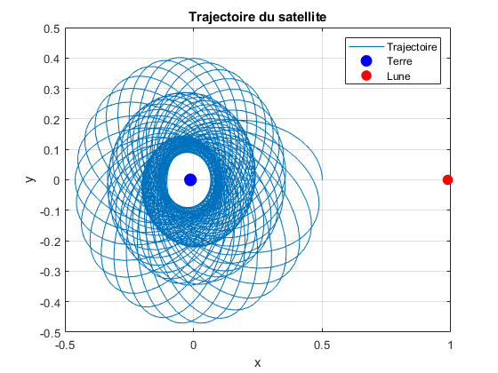

% Paramètres du problème mu = 0.0121505856; % rapport de la masse de la Lune à celle du système Terre-Lune w0 = 1; % vitesse de rotation des corps primaires q0 = [0.5; 0]; % position initiale du corps étudié p0 = [0; 1]; % vitesse initiale du corps étudié z0 = [q0; p0]; % position et vitesse initiale du corps étudié % Intervalle d'intégration T0 = 2*pi/w0; % Période T = 10*T0; tspan = [0 T]; % Résolution du système d'équations différentielles [t, z] = ode45(@(t, z) dyn(t, w0, z, mu), tspan, z0); % Positions de la Terre et de la Lune x_earth = -mu; y_earth = 0; x_moon = 1 - mu; y_moon = 0; % Tracé de la trajectoire du troisième corps figure; plot(z(:,1), z(:,2)); hold on; plot(x_earth, y_earth, 'bo', 'MarkerSize', 10, 'MarkerFaceColor', 'b'); % Terre plot(x_moon, y_moon, 'ro', 'MarkerSize', 8, 'MarkerFaceColor', 'r'); % Lune %h = quiver(q0(1), q0(2), p0(1)/5, p0(2)/5, 'r', 'LineWidth', 1.5, 'MaxHeadSize', 1); % Vecteur de vitesse initial %text(q0(1) + 0.02 + h.UData/2, q0(2) + h.VData/2 , ' v0', 'Color', 'red', 'FontSize', 12); % Nom du vecteur title('Trajectoire du satellite'); xlabel('x'); ylabel('y'); legend('Trajectoire', 'Terre', 'Lune'); grid on; hold off;